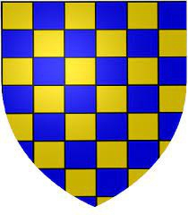

Greve av Vermandois. Blev ca 33 år.
omkring 817. [1]
omkring 850. [1]
Pepin II ( franska : Pépin ; ca 817—efter 850) var greve av Vermandois , herre över Senlis , Péronne och Saint Quentin . Han var son till kung Bernard av Italien (en sonson till Karl den Store ) och hans drottning, Cunigunda av Laon . [1] Han stöttade kejsar Lothar efter döden av kejsar Ludvig den fromme , trots att han svurit trohet till Karl den skallige .
Pepins fru är okänd; deras barn var:
Bernard II, greve av Laon [1]
Pepin III, greve av Vermandois [1]
Herbert I, greve av Vermandois [1]
Cunigunda?